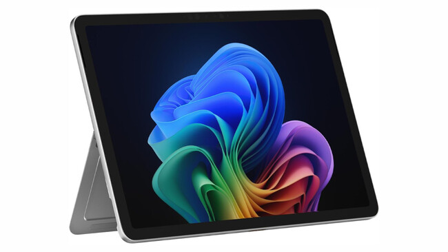

"Diccionario Maestro de Tablets"
Su característica principal es la pantalla táctil, que elimina la necesidad de un teclado físico o ratón, permitiendo una interacción directa con los dedos o un lápiz óptico (stylus).
Son ideales para el consumo de contenido multimedia, diseño gráfico y tareas de productividad ligera gracias a su versatilidad.
Contenido Visual
